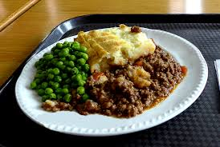

Shepherd's pie

Description
Here i'll show you how to prepare a delicious shepherd's pie
ingredients
- 1 teaspoon salt, plus more to taste
- 3 large (1 1/2 to 2 pounds) potatoes, peel and quartered
- 8 tablespoons (1 stick) butter, divided
- 1 to 2 cups mixed vegetables, such as diced carrots, corn, or peas
- 1 1/2 pounds ground round beef
- 1/2 cup beef broth
- 1 teaspoon Worcestershire sauce
Home